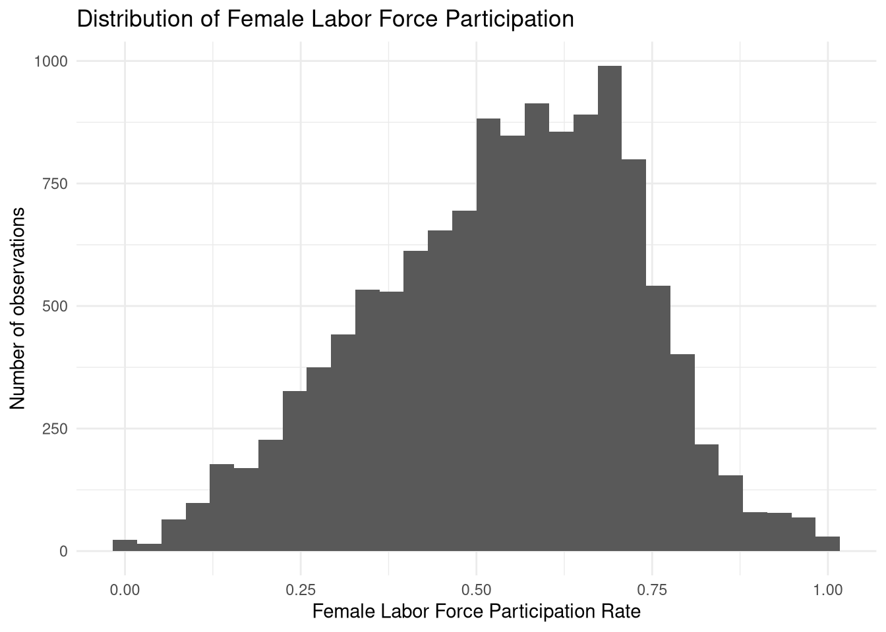
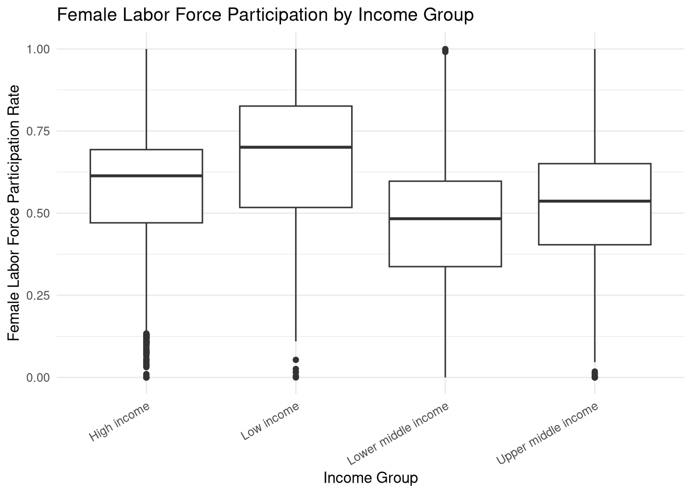
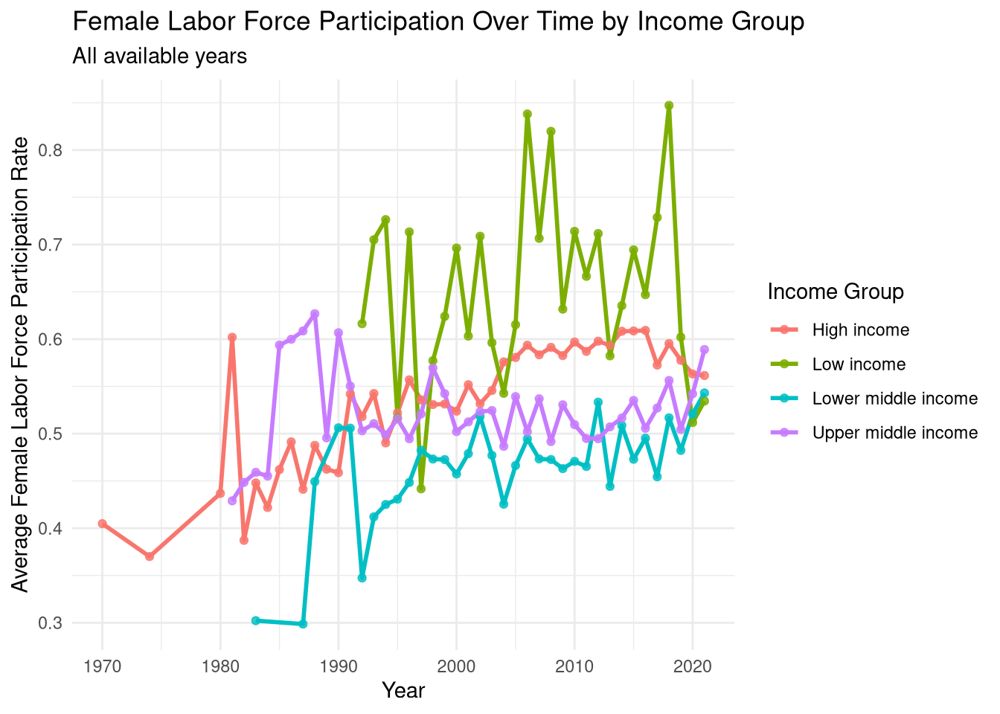
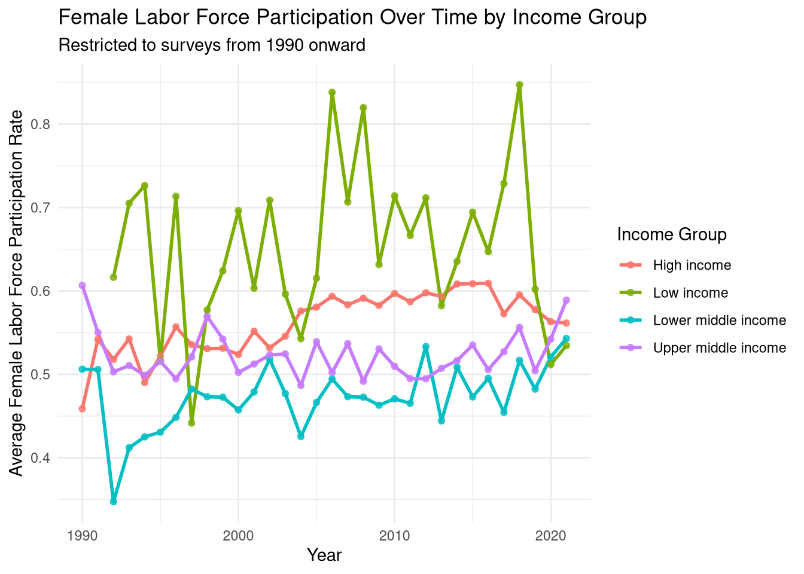

We use the Global Jobs Indicators Database from the World Bank. The dataset contains labour market indicators for different countries, income groups, subsamples, and survey years.
Our project focuses on Female Labor Force Participation, especially how it differs across countries, income levels, urban/rural residence, and over time.
Key variables for our initial analysis are:
Female Labor Force Participation Rate, aged 15–64
Income Level Name
Region Code
Subsample
Year of survey
Unemployment Rate, aged 15–64
Female in non-agricultural employment, aged 15–64
Average weekly working hours
Research Questions
How does female labor force participation vary across countries, income groups, urban/rural populations, and over time?
Which socioeconomic and labour market factors are associated with female labor force participation?
Can female labor force participation be predicted using socioeconomic and labour market indicators?
Initial EDA
Code
library(tidyverse)
── Attaching core tidyverse packages ──────────────────────── tidyverse 2.0.0 ──
✔ dplyr 1.2.1 ✔ readr 2.2.0
✔ forcats 1.0.1 ✔ stringr 1.6.0
✔ ggplot2 4.0.3 ✔ tibble 3.3.1
✔ lubridate 1.9.5 ✔ tidyr 1.3.2
✔ purrr 1.2.2
── Conflicts ────────────────────────────────────────── tidyverse_conflicts() ──
✖ dplyr::filter() masks stats::filter()
✖ dplyr::lag() masks stats::lag()
ℹ Use the conflicted package (<http://conflicted.r-lib.org/>) to force all conflicts to become errors
Code
library(here)
here() starts at /home/lezzo/UNI/R-Project/StatProg2-Group-Project
Rows: 14,628
Columns: 103
$ `Country Name` <chr> …
$ `Country Code` <chr> …
$ `Region Code` <chr> …
$ Subsample <chr> …
$ `Income Level Name` <chr> …
$ `Income Level Code` <chr> …
$ `Year of survey` <dbl> …
$ `Survey Data Source` <chr> …
$ `Survey Type` <chr> …
$ `Total population` <dbl> …
$ `Children, aged 0-14` <dbl> …
$ `Youth, aged 15-24` <dbl> …
$ `Adult, aged 25-64` <dbl> …
$ `Elderly, aged 65+` <dbl> …
$ `Urban Population (% of total Population)` <dbl> …
$ `Working Age Population, aged 15-64 (% of total Pop.)` <dbl> …
$ `Dependency Rate, all compared to 15-64` <dbl> …
$ `Youth Dependency Rate, younger than 15 compared to 15-64` <dbl> …
$ `Old Age Dependency Rate, older than 64 compared to 15-64` <dbl> …
$ `Labor Force, aged 15-64` <dbl> …
$ `Labor Force Participation Rate, aged 15-64` <dbl> …
$ `Female Labor Force Participation Rate, aged 15-64` <dbl> …
$ `Not in labor force or education rate among youth, aged 15-24` <dbl> …
$ `Share of workers (aged 15-64) with more than one jobs in last week` <dbl> …
$ `Employment to Population Ratio, aged 15-64` <dbl> …
$ `Employment Rate, aged 15-64` <dbl> …
$ `Unemployment Rate, aged 15-64` <dbl> …
$ `Youth Employment Rate, aged 15-24` <dbl> …
$ `Youth Unemployment Rate, aged 15-24` <dbl> …
$ `Wage employees, aged 15-64` <dbl> …
$ `Self-employed, aged 15-64` <dbl> …
$ `Unpaid, aged 15-64` <dbl> …
$ `Employers, aged 15-64` <dbl> …
$ `Unpaid or Self-employed, age 15-64` <dbl> …
$ `Share of informal jobs, aged 15-64` <dbl> …
$ `Share of work contract` <dbl> …
$ `Share of health insurance` <dbl> …
$ `Share of social security` <dbl> …
$ `Public sector employment, aged 15-64` <dbl> …
$ `Agriculture, aged 15-64` <dbl> …
$ `Industry, aged 15-64` <dbl> …
$ `Services, aged 15-64` <dbl> …
$ `Mining, aged 15-64` <dbl> …
$ `Manufacturing, aged 15-64` <dbl> …
$ `Electricity and utilities, aged 15-64` <dbl> …
$ `Construction, aged 15-64` <dbl> …
$ `Commerce, aged 15-64` <dbl> …
$ `Transport & Communication, aged 15-64` <dbl> …
$ `Financial and Business Services, aged 15-64` <dbl> …
$ `Public Administration, aged 15-64` <dbl> …
$ `Other services, aged 15-64` <dbl> …
$ `Female in non-agricultural employment, aged 15-64` <dbl> …
$ `Youth in non-agricultural employment, aged 15-64` <dbl> …
$ `Non-Agricultural wage employment, aged 15-64` <dbl> …
$ `Non-Agricultural unpaid employment, aged 15-64` <dbl> …
$ `Non-Agricultural employer, aged 15-64` <dbl> …
$ `Non-Agricultural self-employed, aged 15-64` <dbl> …
$ `Youth Non-Agricultural wage employment, aged 15-24` <dbl> …
$ `Wage employment in agriculture, aged 15-64` <dbl> …
$ `Wage employment in industry, aged 15-64` <dbl> …
$ `Wage employment in services, aged 15-64` <dbl> …
$ `Senior Officials, aged 15-64` <dbl> …
$ `Professionals, aged 15-64` <dbl> …
$ `Technicians, aged 15-64` <dbl> …
$ `Clerks, aged 15-64` <dbl> …
$ `Service and Market Sales, aged 15-64` <dbl> …
$ `Skilled Agriculture, aged 15-64` <dbl> …
$ `Craft Workers, aged 15-64` <dbl> …
$ `Machine Operators, aged 15-64` <dbl> …
$ `Elementary Occupations, aged 15-64` <dbl> …
$ `Armed Forces` <dbl> …
$ `Average weekly working hours` <dbl> …
$ `Underemployment, <35 hours per week` <dbl> …
$ `Excessive working hours,>48 hours per week` <dbl> …
$ `Median Earnings for wage workers per hour, local nominal currency` <dbl> …
$ `Median Earnings for wage workers per month, local nominal currency` <dbl> …
$ `Median Earnings for wage workers per month in agriculture, local nominal currenc` <dbl> …
$ `Median Earnings for wage workers per month in industry, local nominal currency` <dbl> …
$ `Median Earnings for wage workers per month in service, local nominal currency` <dbl> …
$ `Median Earnings for wage workers per hour, deflated to 2011 local currency valu` <dbl> …
$ `Real Median Hourly Wages in USD (base 2011), PPP adjusted` <dbl> …
$ `Median Earnings for wage workers per month, deflated to 2011 local currency valu` <dbl> …
$ `Real Median Monthly Wages in USD (base 2011), PPP adjusted` <dbl> …
$ `Female to Male gender wage gap, calculated with median wages` <dbl> …
$ `Public to Private wage gap, calculated with median wages` <dbl> …
$ `No Education` <dbl> …
$ `Primary Education` <dbl> …
$ `Secondary Education` <dbl> …
$ `Post Secondary Education` <dbl> …
$ `Mean number of years of education completed, aged 17 and older` <dbl> …
$ `Enrollment rate for individuals aged 6-16` <dbl> …
$ `Individual age` <dbl> …
$ `Mean age of worker between 15-64` <dbl> …
$ `Mean age of worker in agriculture, between 15-64` <dbl> …
$ `Mean age of worker in industry, between 15-64` <dbl> …
$ `Mean age of worker in services, between 15-64` <dbl> …
$ `Mean age of wage worker, between 15-64` <dbl> …
$ `Mean age of self-employed or unpaid worker, between 15-64` <dbl> …
$ `Mean age of employer, between 15-64` <dbl> …
$ `Total flags in survey` <dbl> …
$ `Percentile (100 = max), total flags` <dbl> …
$ `Flags over max number of flags` <dbl> …
$ `Percentile (100 = max), share of flags` <dbl> …
We first inspect the structure of the dataset to understand the number of variables, the available observations, and the relevant labour market indicators.
Code
jobs <- jobs_raw %>%select(country =`Country Name`,region =`Region Code`,income_level =`Income Level Name`,subsample =`Subsample`,year =`Year of survey`,flfp =`Female Labor Force Participation Rate, aged 15-64`,unemployment =`Unemployment Rate, aged 15-64`,female_non_agri =`Female in non-agricultural employment, aged 15-64`,avg_weekly_hours =`Average weekly working hours` )
The summary statistics give us a first impression of the overall distribution of female labor force participation in the dataset.
Code
ggplot(jobs, aes(x = flfp)) +geom_histogram(bins =30) +labs(title ="Distribution of Female Labor Force Participation",x ="Female Labor Force Participation Rate",y ="Number of observations" ) +theme_minimal()
Warning: Removed 1934 rows containing non-finite outside the scale range
(`stat_bin()`).

This histogram shows how female labor force participation is distributed across all available observations. It helps us identify whether most observations are concentrated around low, medium, or high participation rates.
Code
ggplot(jobs, aes(x = income_level, y = flfp)) +geom_boxplot() +labs(title ="Female Labor Force Participation by Income Group",x ="Income Group",y ="Female Labor Force Participation Rate" ) +theme_minimal() +theme(axis.text.x =element_text(angle =30, hjust =1))
Warning: Removed 1934 rows containing non-finite outside the scale range
(`stat_boxplot()`).

This boxplot compares female labor force participation across income groups. It gives a first indication of whether countries with different income levels show different patterns.
Code
jobs_time_all <- jobs %>%filter(!is.na(flfp),!is.na(year),!is.na(income_level) ) %>%group_by(year, income_level) %>%summarise(mean_flfp =mean(flfp, na.rm =TRUE),observations =n(),.groups ="drop" )ggplot(jobs_time_all, aes(x = year, y = mean_flfp, color = income_level)) +geom_line(linewidth =1) +geom_point(size =1.5, alpha =0.8) +labs(title ="Female Labor Force Participation Over Time by Income Group",subtitle ="All available years",x ="Year",y ="Average Female Labor Force Participation Rate",color ="Income Group" ) +theme_minimal()

This plot shows the development of average female labor force participation across all available years. However, the early years appear quite noisy. This is likely because the number of available country surveys differs strongly between years and income groups. Therefore, this plot is useful as a first overview, but should be interpreted carefully.
Code
jobs_time_1990 <- jobs %>%filter(!is.na(flfp),!is.na(year),!is.na(income_level), year >=1990 ) %>%group_by(year, income_level) %>%summarise(mean_flfp =mean(flfp, na.rm =TRUE),observations =n(),.groups ="drop" )ggplot(jobs_time_1990, aes(x = year, y = mean_flfp, color = income_level)) +geom_line(linewidth =1) +geom_point(size =1.5, alpha =0.8) +labs(title ="Female Labor Force Participation Over Time by Income Group",subtitle ="Restricted to surveys from 1990 onward",x ="Year",y ="Average Female Labor Force Participation Rate",color ="Income Group" ) +theme_minimal()

To reduce the influence of sparse early data, we also plot the same trend from 1990 onward. This version is easier to interpret because the time period is more consistent and contains more observations. We therefore treat the full time plot as an overview and the 1990-onward plot as the more reliable version for discussing trends.
Analysis Plan
To answer the first research question, we will compare female labor force participation across income groups, regions, subsamples, and years using summary statistics and visualisations such as boxplots and line charts.
To answer the second research question, we will explore relationships between female labor force participation and other variables such as unemployment, female non-agricultural employment, education indicators, and average weekly working hours. We will mainly use scatterplots, group comparisons, and correlation-based analysis.
To answer the third research question, we plan to build a simple predictive model with female labor force participation as the outcome variable. Possible predictors include income level, subsample, unemployment rate, female non-agricultural employment, education variables, and average weekly working hours.
Potential limitations are that important social and cultural factors such as religion, childcare policies, gender roles, and political systems are not directly included in the dataset. Therefore, our analysis can describe patterns and associations, but it cannot fully explain all causes of female labor force participation.